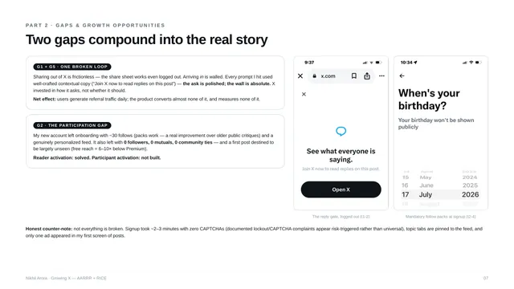
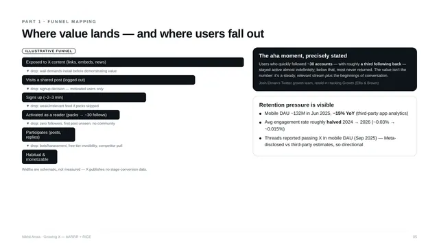

Social · Growth
Growing X: AARRR funnel teardown and RICE-ranked epics
X's strategy needs more people inside the product, and its funnel is built to keep them out. I mapped where, then proposed three epics in the order they should ship.

Summary
- Question
- Where does X's funnel leak, and what should it build first?
- Key finding
- Follow packs activate readers, not participants. A fresh account left onboarding with about 30 follows, zero followers, zero mutuals and no community ties.
- What I proposed
- Two-way connections at onboarding (RICE 4.80), shared links as a working front door (4.00), and invite-and-earn on X Money rails (2.88).
- Thesis
- Fix participation, open the front door, then pay the loop to spin.
Approach: primary research first
- Logged-out test. Opened shared x.com links in a mobile incognito tab and documented every gate.
- Fresh-account walkthrough. A full manual signup on iOS, every screen captured and timed end to end.
- First-feed audit. Classified the first posts of a brand-new For You feed and noted where ads and upsells appeared.
- App Store review scan. Recent critical reviews, with themes tallied against public review sites.
X has published no audited user or financial data since going private in October 2022, when its last official figure was 237.8M mDAU. Every figure since is a third-party estimate, and the estimates conflict. So the deck quotes ranges instead of points, labels assumptions inline and carries the uncertainty into the confidence term of every RICE score.
The user journey on X today
- First exposure. A link shared on WhatsApp, a news embed, an app-store browse or event-driven curiosity.
- The wall. Logged-out visitors see the single linked post. Replies, profiles, search and feeds sit behind signup or install prompts.
- Signup, about 2–3 minutes. Email or phone, birthday, name, username, password, three interests, then follow packs.
- First feed. A For You feed plus pinned topic tabs, only as good as the follows made during onboarding.
- First actions. The first like, reply or post. Free accounts get 6–10× fewer impressions than Premium accounts (per a Buffer analysis of 18M posts), so first posts go largely unseen.
- Return loop. Notifications, breaking news, Communities and creator content.
- Deepening. A small minority converts to Premium, creator monetisation or X Money.

AARRR: what users do and where value is felt
| Stage | What users do | Where value is felt | Metric |
|---|---|---|---|
| Acquisition | Click a shared link, install, sign up | A glimpsed post proving X has the live conversation | Logged-out visitor to signup conversion |
| Activation | Pick interests, follow curated packs, scroll the first feed | Around 30 follows with roughly a third following back: a feed worth returning to | Share of new users reaching ~30 follows in week 1; D1 and D7 retention |
| Retention | Daily check-ins, notifications, topic tabs, Communities, live events | Being first to know when news breaks | DAU/MAU, D30 retention, session frequency |
| Revenue | See ads, subscribe to Premium, earn creator payouts, use X Money | Reach and monetisation for creators; checkmark, reach boost and Grok for subscribers | ARPU, Premium conversion, creator payout volume |
| Referral | Share links to WhatsApp or iMessage, quote-post, embed | The social capital of sharing news first | Shares per user and referred signups, currently uninstrumented |
X monetises before it earns referral: the Premium upsell appeared in my walkthrough before the account even existed.
Five gaps across the funnel
| Gap | Stage | What's wrong | Why it matters |
|---|---|---|---|
| G1 | Acquisition | The logged-out wall breaks the viral loop at the receiving end: a shared link shows one post and gates everything else | Shared links are X's largest free acquisition channel, and each one demands an install before showing value |
| G2 | Activation | Follow packs fix follow volume, not reciprocity: 15–30 follows of accounts that never follow back | Readers get activated, participants don't, and a network needs people who post |
| G3 | Retention | Feed trust is eroding: bots, harassment, hacked accounts, weak moderation response | The leakiest visible stage: mobile DAU down about 15% a year and engagement roughly halved, per third-party estimates |
| G4 | Revenue | Premium is pushed before value and bought by almost no one: an estimated 0.65–1.4M subscribers, under 0.5% of MAU | Ad revenue is about half its 2021 peak, so subscriptions need to land |
| G5 | Referral | No invite mechanic, incentive or attribution; recipients land on G1's wall | Referral is the cheapest acquisition channel, and X leaves it to chance |
Two gaps compound into the real story
Sharing out of X is frictionless; even logged out, the share sheet works. Arriving in is walled. Every prompt I hit used well-crafted copy (“Join X now to read replies on this post”), so the ask is polished while the wall is absolute. Users generate referral traffic every day, and the product converts almost none of it and measures none of it.
My new account left onboarding with about 30 follows and a genuinely personalised feed, a real improvement on older critiques. It also left with zero followers, zero mutuals and no community ties. Reader activation is solved; participant activation isn't built.
Not everything is broken. Signup took 2–3 minutes with no CAPTCHA, topic tabs are pinned to the feed, and only one ad appeared in the first screen of posts.
Strategy context, July 2026
X's strategy rested on five pillars: an everything app built around payments (X Money), an AI-first feed, the creator economy, video, and ad recovery. Every pillar needs a bigger, more engaged, more verified user base, yet the funnel restricts its own top and under-invests in participation. X Money also makes a proven consumer-tech referral playbook possible on the platform for the first time: cash incentives of the kind PayPal and Cash App used.
I focused the epics on activation and referral: the clearest evidence, the tightest strategic fit, and two ends of the same broken loop. Retention is the biggest leak, but durable fixes there are multi-year trust-and-safety programmes, not epics.
Three epics
E1 · Two-way connection at onboarding
Hypothesis: new users who gain at least 5 followers and join at least one Community in week 1 retain materially better at D30 than consumption-only users.
- “People like you” packs of similar-sized accounts, primed for mutual follows, alongside the celebrity packs.
- A one-tap Community on-ramp with an intro prompt during onboarding.
- Reciprocity nudges that surface new joiners to established accounts in their niche.
- Granular pack control, so users can deselect individual accounts.
Success: share of new users with 5+ mutual follows and a Community by day 7; D30 retention against control; first-post impressions for new accounts.
E2 · Shared links as a working front door
Hypothesis: showing a slice of the conversation before the gate lifts logged-out-to-signup conversion on shared links without reducing total signups.
- A rich logged-out preview: the post plus two or three top replies and related posts before any gate.
- The existing contextual prompts, fired later in the visit.
- Attributed share links carrying a referral token, which instrument referral for the first time.
Success: visitor-to-signup conversion on shared links; bounce rate on logged-out post pages; referral-attributed signups per sharing user.
E3 · Invite-and-earn on X Money rails
Hypothesis: a modest two-sided credit drives referred signups at lower acquisition cost than paid channels, while seeding X Money wallets with a first balance.
- Inviter and invitee both get X Money credit when the new user verifies and clears E1's activation bar, so X pays for activated users, not signups.
- Verification-gated payouts, velocity limits and regional caps against fraud.
Success: referred activated users a month; blended acquisition cost of referral against paid; wallet activations from referral credits; invitee D30 retention against organic users.
RICE: assumptions stated, maths shown
| Epic | Stage | Reach (M/qtr) | Impact | Conf. | Effort (person-months) | RICE |
|---|---|---|---|---|---|---|
| E1 · Two-way connection at onboarding | Activation | 30 | 2 | 0.8 | 10 | 4.80 |
| E2 · Shared link as a working front door | Acquisition, referral | 40 | 1 | 0.8 | 8 | 4.00 |
| E3 · Invite-and-earn on X Money rails | Referral | 36 | 2 | 0.8 | 20 | 2.88 |
Reach is people affected per quarter, anchored on stated assumptions: about 25–35M new users a quarter if MAU is 550–600M with 15–20% churn, about 240M DAU, and 10–20% of DAU sharing externally. Impact uses Intercom's scale. With no audited platform data, nothing honestly earns 100% confidence.
Worked example for E3: reach is 15% of about 240M DAU, roughly 36M a quarter; impact is 2; confidence is 0.8 because the playbook is proven elsewhere; effort is 20 person-months because of payments and fraud scope. (36 × 2 × 0.8) ÷ 20 = 2.88.
The score reveals a sequence
- Now: E1. It fixes activation at the source with no new infrastructure, and defines the “activated user” bar the rest of the system uses.
- In parallel: E2. The cheapest epic converts more logged-out visitors, which E1 then activates, and ships the attribution rail as a by-product.
- Next: E3. Not weak, just heavy and dependent: it pays out on E1's activation bar through E2's attribution.
The metric to watch is the share of new users reaching 5+ mutual follows and one Community in week 1, the modern completion of the 30-follow aha moment.
Limits of this work
- Every platform figure after October 2022 is a third-party estimate, so the deck quotes ranges.
- The walkthrough is one fresh account on one platform (iOS, July 2026).
- Funnel widths are schematic, and reach anchors are stated assumptions, not measured values.